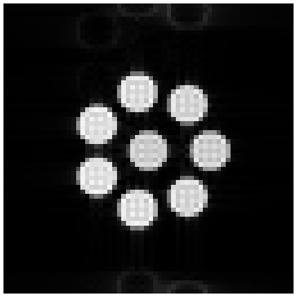

Note
Go to the end to download the full example code.
1. From protocol to image#
A scan through pulserver passes four stages: a scanner sequence resolves the protocol the operator edits and designs the sequence, the design is converted into the representation the scanner plays, the scanner plays it, and the raw data are enriched from the sequence and reconstructed. This lesson runs all four in one process, on the virtual scanner, and returns an image.
Learning objectives
List the protocol of a shipped scanner sequence, edit it, validate it and generate a design, as an interpreter does through the design calls.
Start an exam on a phantom and scan a stored design on it.
Name the four stages a scan passes, and the lesson of this course that treats each.
The next lesson writes the scanner sequence this lesson takes from the shipped plugins.
A console in one process#
Console answers what a scanner console asks of
pulserver: the design calls, an exam on a subject, and a scan. It is given
the scanner limits as the [Limits] block an interpreter sends, and a
design store, here a temporary directory. With recon_plugins it
reconstructs each scan in this process, as the reconstruction proxy would.
An empty list of plugin directories leaves the shipped plugins, which are
found by name.
import tempfile
from pathlib import Path
import numpy as np
from pulserver import virtual
limits = """[Limits]
B0: 3.0
max_grad: 40
grad_unit: mT/m
max_slew: 150
slew_unit: T/m/s
[Limits End]
"""
store = Path(tempfile.mkdtemp())
console = virtual.Console(plugins=[], limits=limits, store=store, recon_plugins=[])
The protocol#
The list call returns the protocol of the shipped gre2d, pypulseqpp’s
2D gradient echo bound to the scanner UI: each entry’s value, range and
unit, in the text block the interpreter reads. The block ends with the
prescription entries, the field-of-view offset and rotation, which the
interpreter fills from the scanner’s; they are left out of the print.
from pulserver.protocol import (
UIParam,
format_values,
parse_listing,
parse_validation,
)
listing = console.design("list", "gre2d")["reply"]
block = listing[listing.index("[Protocol]") :]
print(block[: block.index("fov_offset_x")])
[Protocol]
flip: float|typein|12.0|1.0|90.0|1.0|deg
TE: int|dropdown|8000|1000|80000|10|us|-2|5000|8000
TR: int|dropdown|250000|1000|5000000|1|us|-1
bandwidth: float|typein|250000.0|1000.0|1000000.0|1.0|Hz
fov: float|typein|220.0|50.0|500.0|1.0|mm
phase_fov: float|typein|220.0|50.0|500.0|1.0|mm
nx: int|typein|128|32|512|2|
ny: int|typein|128|32|512|2|
nslices: int|typein|1|1|64|1|
slice_thickness: float|typein|5.0|1.0|20.0|1.0|mm
Ry: int|typein|1|1|4|1|
An edit is a value block sent back. The matrix is reduced to 64 by 64, and
the validate call resolves the request: it designs the sequence under the
limits and replies with the protocol the design achieves and the scan time.
The entries the design changed are printed beside the values requested.
entries = parse_listing(block)
values = {key: entry.value for key, entry in entries.items()}
values.update({UIParam.NX: 64, UIParam.NY: 64})
request = format_values(values, entries)
validation = parse_validation(
console.design("validate", "gre2d", request)["reply"], entries
)
print(f"valid: {validation.valid}, scan time {validation.duration:.1f} s")
for key, value in validation.values.items():
if value != values[key]:
print(f"{key}: requested {values[key]}, achieved {value}")
valid: True, scan time 20.0 s
bandwidth: requested 250000.0, achieved 100000.0
The generate call designs the sequence, checks it, converts it into the
IR cache and stores both as a design. The reply is the design’s identifier.
GENERATED b50fb70f278fdedd12
['manifest.json', 'resolved.protocol', 'sequence.pseg', 'sequence.seq']
The scan#
An exam names its subject and coil: here the vials phantom, seven water vials
and one fat vial, in the body coil, which transmits and receives on one
channel. The scan plays the stored design on the phantom’s tissue with the
virtual scanner’s Fourier engine, sends the raw data to the reconstruction,
here pics, and receives the images as DICOM.
import base64
import io
import pydicom
console.exam("vials", coil="body")
received = []
status = console.scan(
design,
rotation=np.eye(3),
centre_mm=(0.0, 0.0, 0.0),
emit=received.append,
recon="pics",
)
images = [
pydicom.dcmread(io.BytesIO(base64.b64decode(item["dicom"])))
for item in received
if "dicom" in item
]
print(f"status {status}, {len(images)} image of {images[0].pixel_array.shape}")

WARNING:pulserver.recon.gadgets:readouts are not prewhitened: the stream has no noise readouts before its first other readout, and the exam stores no noise covariance for its coil labels
status 0, 1 image of (64, 64)
The four stages#
The image is the end of four stages, which the rest of the course takes one at a time.
Design. The scanner sequence binds a pypulseqpp sequence function to the protocol entries and resolves each request (2. A scanner sequence and its protocol).
Scanner representation. The design is converted into base blocks, virtual segments and an execution stream, the IR cache the interpreter loads (3. Scanner representation).
Playout. The interpreter plays the cache; here the virtual scanner plays it on a phantom (The virtual scanner).
Reconstruction. The raw data are enriched from the sequence that played them and reconstructed by a reconstruction plugin (4. A reconstruction plugin).
Total running time of the script: (0 minutes 0.571 seconds)